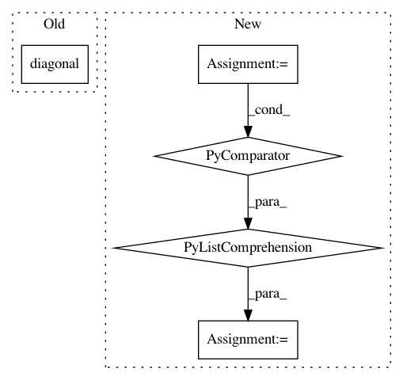

7bdaa81cbef16d3626b3044bfe5c279120a9c0a0,lib/model/initializers.py,ConvolutionAware,_symmetrize,#Any#,188
Before Change
@staticmethod
def _symmetrize(var_a):
return var_a + var_a.T - np.diag(var_a.diagonal())
@staticmethod
def _scale_filters(filters, variance):
After Change
def _symmetrize(var_a):
var_b = np.transpose(var_a, axes=(0, 1, 3, 2))
diag = var_a.diagonal(axis1=2, axis2=3)
var_c = np.array([[np.diag(arr) for arr in batch] for batch in diag])
return var_a + var_b - var_c
@staticmethod
def _scale_filters(filters, variance):
In pattern: SUPERPATTERN
Frequency: 3
Non-data size: 5
Instances
Project Name: deepfakes/faceswap
Commit Name: 7bdaa81cbef16d3626b3044bfe5c279120a9c0a0
Time: 2019-09-28
Author: 36920800+torzdf@users.noreply.github.com
File Name: lib/model/initializers.py
Class Name: ConvolutionAware
Method Name: _symmetrize
Project Name: freelunchtheorem/Conditional_Density_Estimation
Commit Name: 10c6710251081c6cfa55cb7a0a693c3b8e7bbdf0
Time: 2019-06-03
Author: jonas.rothfuss@gmx.de
File Name: cde/density_simulation/GMM.py
Class Name: GaussianMixture
Method Name: simulate
Project Name: Qiskit/qiskit-aqua
Commit Name: 790ff93e20cc36e15dfd039924e782cc559a67d7
Time: 2019-08-01
Author: chenrich@us.ibm.com
File Name: qiskit/aqua/operators/op_converter.py
Class Name:
Method Name: to_weighted_pauli_operator